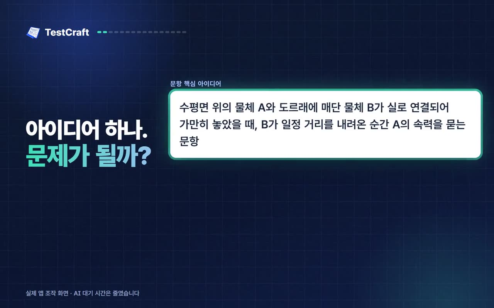
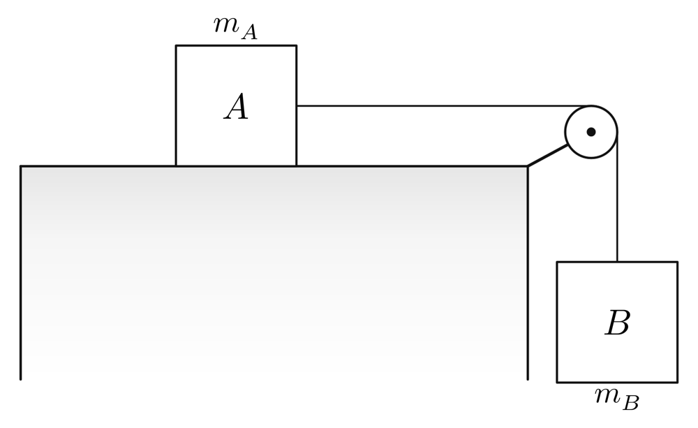
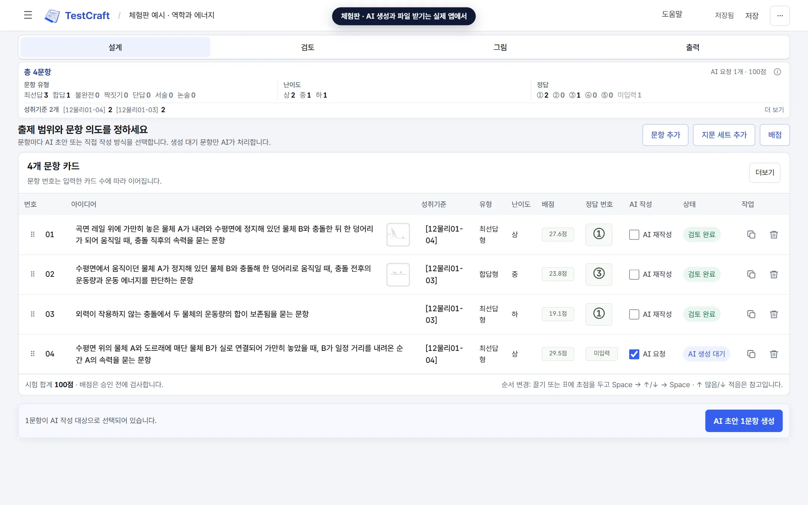
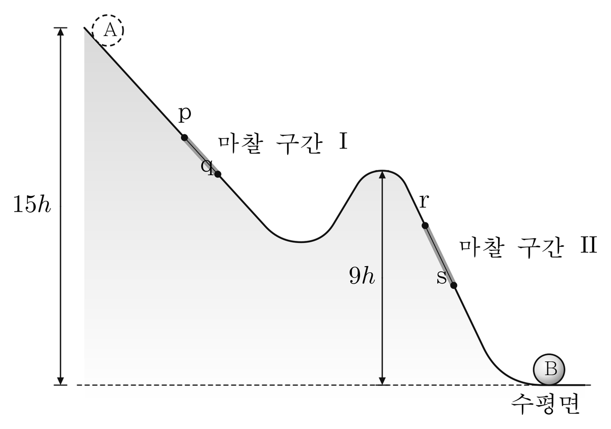
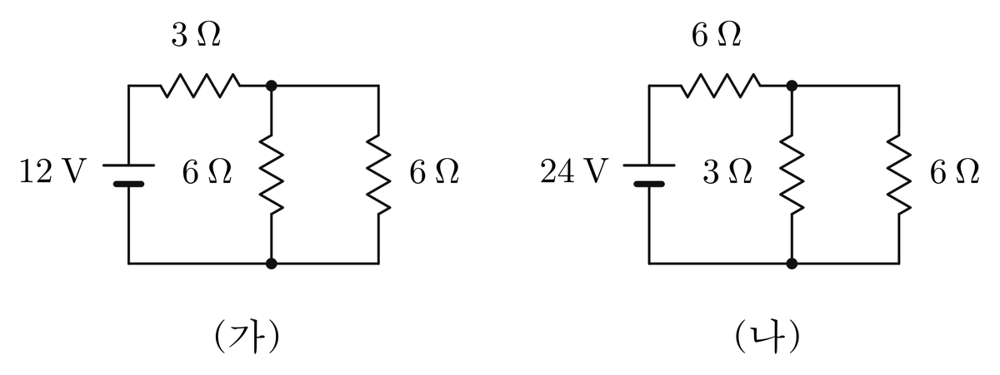
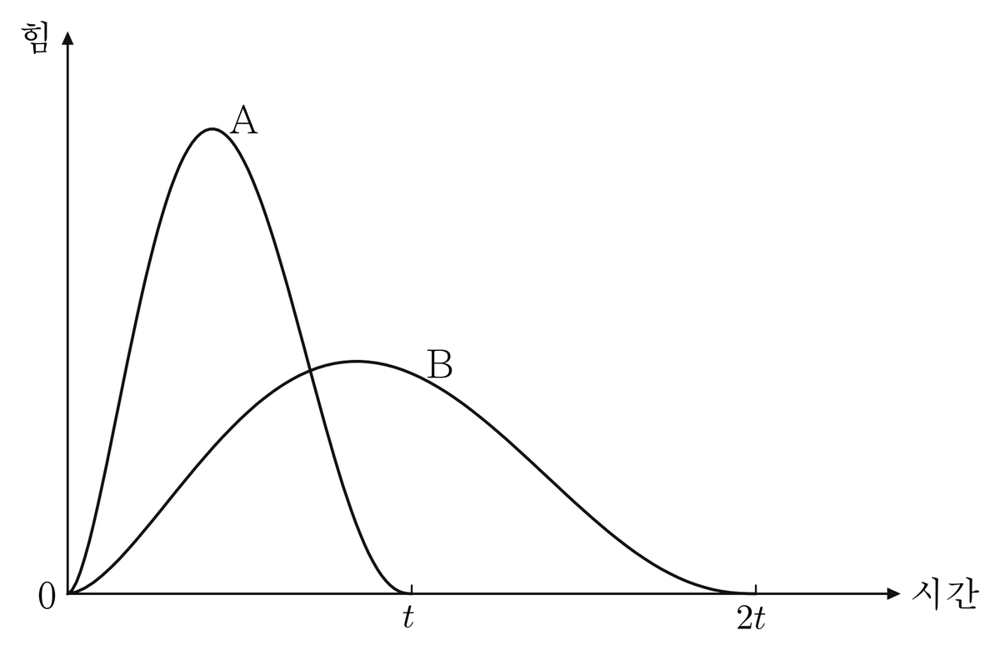
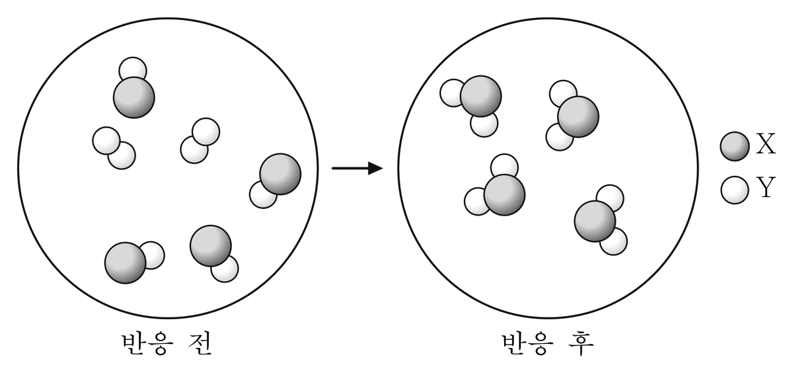
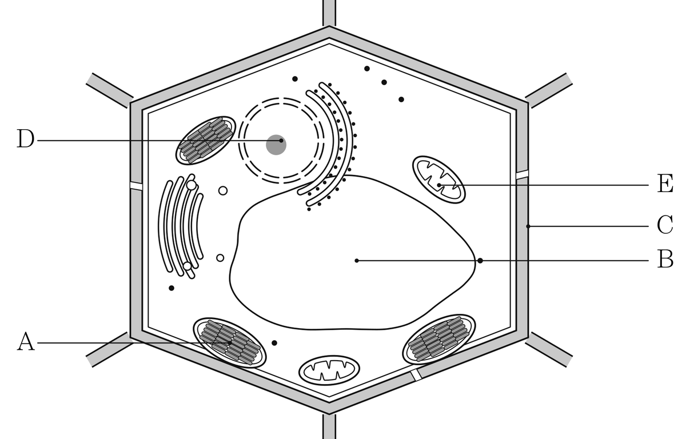
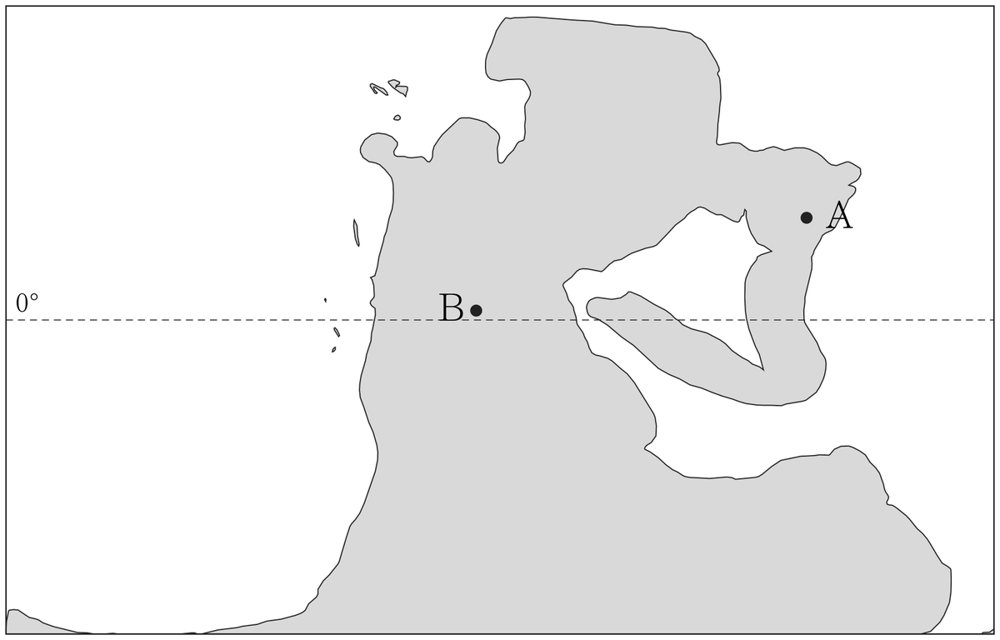

교사를 위한 시험공방
평가의 의도를 담아,
시험을 빚다.
어떤 생각을 묻고 싶은지에서 시작하세요.
문항 설계부터 AI 초안, 자료 그림, 시험지 완성까지.
선생님의 출제 과정을 한 작업실에 담았습니다.
v1.2.6 · Windows 10/11 · 64비트
AI 기능에는 Codex를 사용할 수 있는 유료 ChatGPT 계정이 필요합니다.
실제 앱 시연아이디어 한 줄 → AI 초안 → 그림 → 한글 시험지
짧게 쓰고, 깊게 검토하세요
아이디어 한 줄이
문항 하나가 됩니다.
상황과 묻고 싶은 것만 적으세요.
중력 가속도, 실의 질량, 마찰처럼 늘 붙는 조건은
AI가 평가원 단서 조항으로 채웁니다.
수평면 위의 물체 A와 도르래에 매단 물체 B가 실로 연결되어 가만히 놓았을 때, B가 일정 거리를 내려온 순간 A의 속력을 묻는 문항
물리학 · 최선답형 · 75자1. 그림과 같이 수평면 위의 물체 A와 도르래에 매달린 물체 B가 실로 연결되어 있다. A, B의 질량은 각각 mA, mB이다. 두 물체를 가만히 놓는다.

B가 거리 h만큼 내려온 순간, A의 속력은? (단, 중력 가속도의 크기는 g이고, 실과 도르래의 질량, 물체의 크기, 모든 마찰과 공기 저항은 무시한다.)
- √(mBgh / (mA+mB))
- √(2mBgh / (mA+2mB))
- √(2mBgh / (mA+mB))
- √(2mBgh / mA)
- √(2(mA+mB)gh / mA)
홍보 영상을 찍을 때 실제 앱이 이 한 줄로 만든 결과입니다. 한 줄에 없는 수치는 AI가 지어내지 않고 기호로 쓰며, 단서 조항은 발문 뒤에 붙입니다. 넣은 단서는 검토 의견에 적어 둡니다. 수치를 넣고 싶으면 한 줄에 적으면 됩니다.
기출 변형 NEW
잘 만든 한 문항이
새 문항 하나로.
가진 문제를 캡처해 올리거나, 평가원 기출을 내 PC로 받아 고르세요.
바꿀 것만 고르면 나머지는 원본대로 둡니다.
방식을 눌러 보세요. 같은 원본이 어떻게 달라지는지 바로 보입니다.
수평면 위의 물체 A와 도르래에 매단 물체 B의 질량은 각각 3 kg, 1 kg이다. 두 물체를 실로 연결하고 가만히 놓았을 때, B가 0.8 m 내려온 순간 A의 속력은? (단, 중력 가속도는 10 m/s²이고, 모든 마찰과 실의 질량은 무시한다.)
정답 2 m/s
수평면 위의 물체 C와 도르래에 매단 물체 D의 질량은 각각 1 kg, 1 kg이다. 두 물체를 실로 연결하고 가만히 놓았을 때, D가 0.9 m 내려온 순간 C의 속력은? (단, 중력 가속도는 10 m/s²이고, 모든 마찰과 실의 질량은 무시한다.)
정답 3 m/s 검산 ✓
질량이 각각 3 kg, 1 kg인 물체 C, D를 도르래 양쪽에 실로 매달고 가만히 놓았다. C가 0.9 m 내려온 순간 D의 속력은? (단, 중력 가속도는 10 m/s²이고, 모든 마찰과 실의 질량은 무시한다.)
정답 3 m/s 검산 ✓
수평면 위의 물체 A와 도르래에 매단 물체 B의 질량은 각각 3 kg, 1 kg이다. 두 물체를 실로 연결하고 가만히 놓았을 때, B가 0.8 m 내려오는 동안에 대한 설명으로 옳은 것만을 〈보기〉에서 있는 대로 고른 것은? (단, 중력 가속도는 10 m/s²이고, 모든 마찰과 실의 질량은 무시한다.)
- ㄱ. A의 가속도의 크기는 2.5 m/s²이다.
- ㄴ. 실이 A를 당기는 힘의 크기는 10 N이다.
- ㄷ. B의 역학적 에너지 감소량은 A의 운동 에너지 증가량과 같다.
정답 ㄱ, ㄷ 검산 ✓
- 바뀐 점
- 질량 3 kg, 1 kg → 1 kg, 1 kg
- 이동 거리 0.8 m → 0.9 m
- 정답 2 m/s → 3 m/s
- 바뀐 점
- 수평면 + 도르래 → 도르래 양쪽에 매달기
- 원리는 그대로: 역학적 에너지 보존
- 정답 2 m/s → 3 m/s
- 바뀐 점
- 단답형 → 합답형(〈보기〉 세 개)
- 난이도 하 → 상
- 가속도·장력·에너지를 함께 판단
- 원본과 나란히 검토원본을 화면 오른쪽에 붙여 두고 새 문항을 고칩니다.
- 겹침 검사원본과 겹치는 표현이 많으면 알려 줍니다.
- 출처는 해설지에만학생용 시험지에는 원본 문장과 출처가 들어가지 않습니다.
평가원 기출은 설치 파일에 들어 있지 않습니다. 앱에서 동의하면 평가원 공식 홈페이지에서 과학탐구 문제지를 내 PC로 직접 받습니다. 지금은 과학탐구부터 지원합니다.
하나의 작업실, 네 번의 집중
출제는 하나의 흐름이니까.
파일과 도구 사이를 오가는 대신,
지금 필요한 판단에 집중하세요.
- 01설계
성취기준과 묻고 싶은 생각을 정합니다.
- 02검토
문항·정답·배점을 살피고 승인합니다.
- 03그림
자료를 만들고 객체와 글씨를 다듬습니다.
- 04출력
시험지와 해설을 파일로 완성합니다.
네 가지 기준으로, 문항의 방향을.
성취기준·문항 유형·난이도·핵심 아이디어를 입력하세요. AI 초안과 직접 작성 중에서 선택하고, 문항 분포를 보며 시험 전체의 균형을 잡습니다.
초안은 AI가, 마지막 판단은 선생님이.
문두·발문·보기·정답과 해설을 미리보며 고칩니다. 검토와 배점, 전체 문항카드 승인을 마친 뒤에 실제 그림 제작과 출력으로 넘어갑니다.
한 장의 그림도, 선 하나까지.
strict·mixed·flexible로 제작 범위를 정하고 SVG 객체를 이동·회전·정렬합니다. 물리량·수식·한글은 독립 글씨 객체로 편집하며, 배경을 고쳐도 글씨 레이어는 유지됩니다.
검사를 통과하면, 한 번에 파일로.
문항·배점·승인과 그림 확인을 앱이 마지막으로 점검합니다. 통과하면 학교 양식의 학생용·교사용 한글 시험지와 정답·해설지를 한 번에 만듭니다.

실제 앱 화면을 그대로 옮긴 체험판입니다. 문항 편집부터 검토·승인·그림 확정까지 눌러 볼 수 있습니다. AI 작업은 진행 창만 3초 보여 주고, 4번 문항만 미리 만들어 둔 실제 앱 결과로 채워집니다. 파일 받기는 실행되지 않으며, 바꾼 내용은 창을 닫으면 사라집니다.
AI는 명세를, 그림은 앱이
평가원 꼴 그림,
수와 비율까지 정확하게.
AI가 장면을 명세로 적으면 앱이 기출의 선 굵기와 회색 음영,
입체 음영으로 그립니다. 높이·각·개수가 문항 조건과 어긋나지 않고,
글씨는 따로 옮길 수 있는 레이어로 들어갑니다.






이 밖에도 가계도먹이 그물생태 피라미드염기 서열·코돈반응 경로-에너지세계·한국 지도
짧은 영상 세 편
30초로 보는 TestCraft.
처음 보는 선생님을 위한 30초 소개부터 과목별 예시까지, 모두 실제 앱 화면과 결과로 만들었습니다.
32과목 · 128문항
과목별 예시 문항,
아이디어와 함께 둘러보세요.
국어·수학·영어·사회·과학의 예시 시험지를 실제 앱으로 만들었습니다. 왼쪽은 앱이 출력한 시험지, 오른쪽은 문항마다 입력한 핵심 아이디어입니다.
공개용으로 만든 예시이며 실제 학교 시험이 아닙니다.
처음부터, 함께 만드는 시험
보고, 바로 따라 하세요.
실제 작업실을 조작하며 설명하는 8편의 안내.
앱의 도움말에서는 현재 화면에 맞는 영상과 화면 안내를 만납니다.
설치와 AI 연결
홈페이지 다운로드부터 설치, Codex 연결, ChatGPT 로그인까지 실제 화면으로 따라 합니다.
영상을 불러오지 못했습니다. 영상 새 창에서 보기 또는 아래 글 안내를 이용해 주세요.
글로 읽기
실제 앱 조작 녹화 · 대기 구간 단축 표시 · 공개용 예제 사용 · 공통 오리지널 음악 Quiet Precision
끝은, 바로 쓸 수 있는 파일로
시험지와 답지까지
같은 흐름 안에서.
한글 수식을 담은 학생용·교사용 시험지,
정답과 해설, 문항카드를 함께 준비합니다.
HWPX 출력에는 한컴오피스 한글 설치가 필요합니다.
선생님의 다음 시험을 위해
작업실을 열어보세요.
Windows에 설치하고, Codex 계정을 연결하면 시작할 수 있습니다.
Python·Node.js·Codex CLI를 포함해 따로 준비할 필요가 없습니다.
TestCraft for Windows
처음 사용한다면 설치 파일을 선택하세요.
설치 파일 다운로드EXE · 234.2 MB
새 버전이 나오면 앱이 알려 주고, 한 번 클릭으로 업데이트합니다.
시작 전에 확인하세요
- 운영체제
- Windows 10/11, 64비트
- AI 계정
- Codex를 사용할 수 있는 유료 ChatGPT 구독 계정. 첫 실행에서 로그인합니다.
- 한글 출력
- HWPX 변환과 수식 크기 계산에는 설치된 한컴오피스 한글이 필요합니다.
- 인터넷
- 계정 로그인과 AI 생성에 필요합니다.
앱과 소스는 AGPL-3.0으로 공개합니다. AI 구독과 한글 프로그램은 별도로 준비해 주세요.
- 1 설치하기
파일을 실행하고 설치를 마칩니다.
시작 메뉴에서 TestCraft를 엽니다. - 2 계정 연결하기
내장 CLI 확인 후 Codex 로그인을 누릅니다.
공식 인증 화면에서 로그인합니다. - 3 첫 문항 설계하기
새 시험의 과목을 고르고,
첫 문항의 출제 기준을 입력합니다.
브라우저에서 바로 쓰는 서비스인가요?
설치해서 사용하는 Windows 로컬 앱입니다. 실행하면 내 컴퓨터에서 웹앱 화면이 열립니다. 이 안내 사이트에서는 앱을 다운로드하고 사용 방법을 확인할 수 있습니다.
API 키를 준비해야 하나요?
설치 배포본은 내장 Codex CLI와 계정 로그인을 사용하므로 API 키가 필요하지 않습니다. Codex를 사용할 수 있는 유료 ChatGPT 계정이 필요하며, 이용 한도는 해당 계정의 서비스 조건을 따릅니다.
한글 프로그램 없이도 사용할 수 있나요?
문항 설계와 검토는 가능합니다. 최종 HWPX 시험지 변환에는 한컴오피스 한글이 필요합니다. 변환 시 앱이 별도의 숨김 한글 프로세스를 사용하며, 한글 프로그램과 신명 중명조 글꼴은 설치 파일에 포함되지 않습니다.
시험과 문항은 어디에 저장되나요?
새 설치의 작업물은 내 컴퓨터의 %LOCALAPPDATA%\TestCraft에 저장됩니다. 기존 Question Studio 데이터가 있으면 이전 위치를 유지합니다. AI 기능을 실행하면 선택한 문항 내용이 로그인한 Codex 서비스로 전달됩니다.
새 버전은 어떻게 받나요?
v1.2.5부터 앱이 켤 때와 하루 한 번 새 버전을 확인해 알려 줍니다. 알림에서 지금 업데이트를 누르면 설치 파일을 받아 검증한 뒤 설치하고 앱을 다시 엽니다. 시험 데이터는 그대로입니다. 무설치 ZIP은 이 사이트에서 새 파일을 받아 주세요.
평가원 기출 문제가 앱에 들어 있나요?
들어 있지 않습니다. 기출 변형에서 평가원 기출 받기에 동의하면, 내 PC가 평가원 공식 홈페이지에서 과학탐구 문제지를 직접 받아 문항별로 정리합니다. 문제의 저작권은 한국교육과정평가원에 있으므로 학교 시험 출제를 위한 변형 원본으로만 쓰고 다시 배포하지 마세요. 가진 문제를 캡처하거나 PDF로 올려 변형할 수도 있습니다.
그림도 AI가 그리나요?
두 가지 길이 있습니다. 과학 상황 그림·회로·그래프·입자 모형·세포·가계도와 지도는 AI가 장면을 명세로 적고 앱이 정해진 규칙으로 그립니다. 그래서 수와 비율이 문항 조건과 맞습니다. 그 밖의 그림은 AI가 직접 그리며, 그림 유형을 고를 수 있습니다. strict는 정한 규칙대로 정확하게, flexible은 자유롭게, mixed는 고정할 부분과 자유롭게 그릴 부분을 나눠 그립니다. 자유롭게 그리는 그림도 평가원 그림 문항처럼 검은 선과 회색 음영의 선화로 그립니다. 어느 쪽이든 글씨는 따로 옮길 수 있는 레이어로 들어가고, 교사가 확인하고 고친 뒤 확정합니다.
AI가 만든 문항을 바로 출력하나요?
교사가 문항과 정답·해설을 검토하고 배점을 확인한 뒤 전체 문항카드를 승인합니다. 실제 그림 제작은 승인 이후 진행하며, 완성된 그림도 최종 확인합니다. 출력한 시험지는 인쇄 전 배치와 수식을 확인해 주세요.
직접 수정하거나 재배포할 수 있나요?
소스는 GNU AGPL-3.0으로 공개합니다. 수정·재배포 시 해당 라이선스 조건을 따라 주세요. 포함된 외부 구성 요소는 각각의 라이선스를 유지합니다.